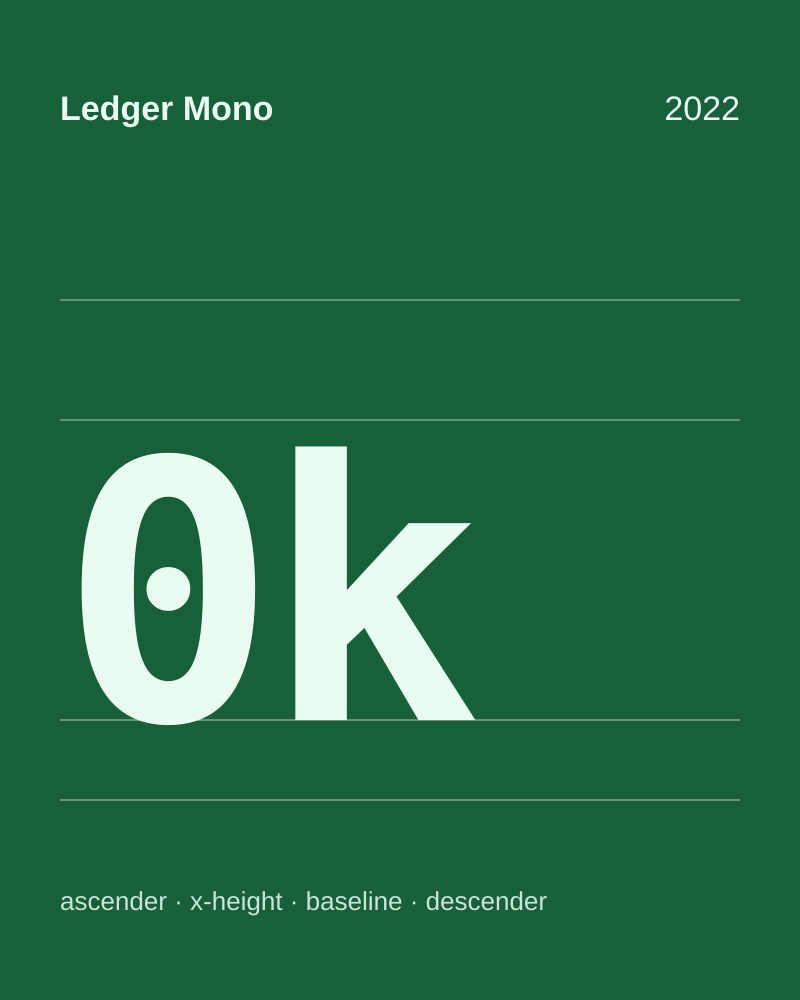

Work / Mono
Ledger Mono
A monospace with a slashed zero and ledger-book figures.
- Released
- 2022
- Family
- 4 styles, Regular and Bold with italics
- Made for
- Made for invoices and code, where a 0 must never look like an O.
Try a line
The typeface is made up, so this is set in the closest font already on your device.
total = sum(rows) - refunds # 1,204.50